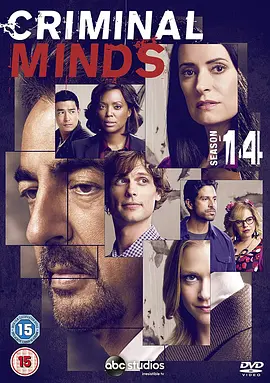

8.9
犯罪心理 第十四季
Criminal Minds Season 14
2018
美国
评分 8.9
导演:
格伦·卡肖（Glenn Kershaw）
演员:
马修·格雷·古柏勒 / 克斯汀·范奈丝 / A·J·库克 / 乔·曼特纳 / 帕姬·布鲁斯特 / 亚当·罗德里格兹 / 丹尼尔·亨利
类型:
剧情,悬疑,犯罪
剧情简介
第十四季篇幅虽比以往更短，却在紧凑的故事节奏中将 BAU 再次推至极限。开篇就是一起牵涉人质和宗教极端组织的高危行动，团队在争分夺秒的救援中迅速进入高压状态，每一次判断都像踩在薄冰上。霍奇不在后，普莱提斯临危受命，承担起更多指挥任务，她沉着果断的风格让队伍在混乱中保持方向。这一季的案件呈现出更强烈的现实感：绑架案里的受害者往往在被隔绝的环境中忍受长期精神折磨；有的嫌犯以家庭暴力延伸出极端暴行；也有人为了维系自我认同，将周围世界扭曲为危险的私人剧场。BAU 在调查这些案件时，从城市夜街到荒野公路不断穿梭，每一次进入陌生住所或林地深处，都可能踏入新的风险。瑞德在本季的表现更富张力，他在推理时的冷静与在面对受害者时的柔软形成鲜明对照。一次次深入嫌犯心理的过程也迫使他直面自身的脆弱与焦虑。JJ 的角色愈发成熟，她的现场判断和沟通能力在关键行动中起到定海神针般的作用。Alvez 与 Simmons 在战术层面展现出默契，常常在短短数秒间完成协同，让行动线保持迅捷与精准。加西亚依旧是团队的温度来源。尽管案件残酷，她的声音总能让机舱中的空气松动几分。她在屏幕前将庞杂数据串联成路径，也在团队濒临疲惫时给予支持，使他们能在漫长奔波中保持清醒。贯穿整季的隐藏线索来自一个极具操控性的对手，他像沉在水底的影子，悄悄牵动多起看似毫无关联的案件。随着调查推进，团队意识到这不仅是另一名连环罪犯，而是一场关于心理掌控与反制的较量。每一步逼近都意味着更深的危险，而 BAU 必须在愈发有限的时间里认清对手真正的动机。即便如此，他们依旧保持团队信念，在黑暗逼近的时刻仍坚持前行。他们知道，每一次抢回无辜生命，都是让世界再亮一点的原因。